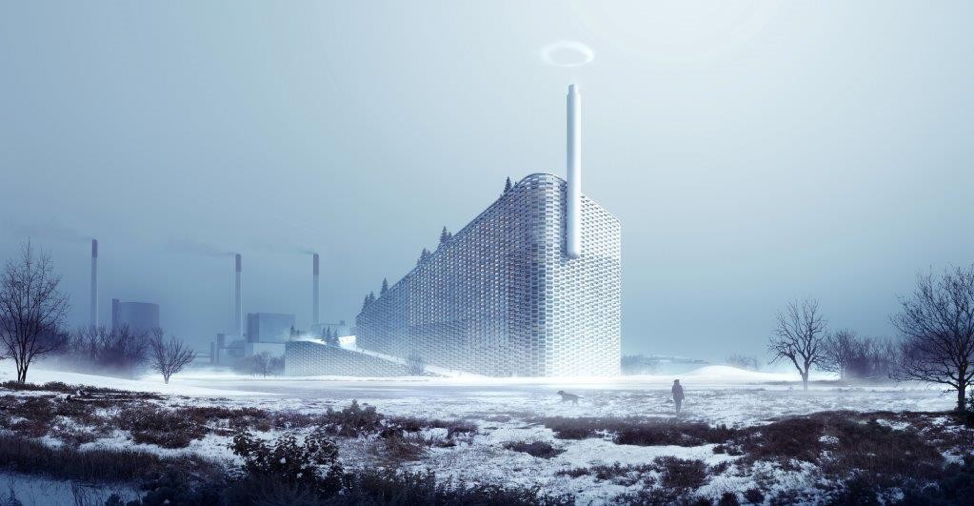
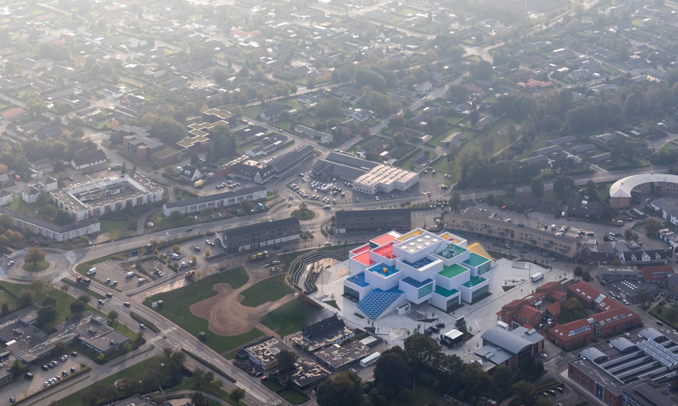
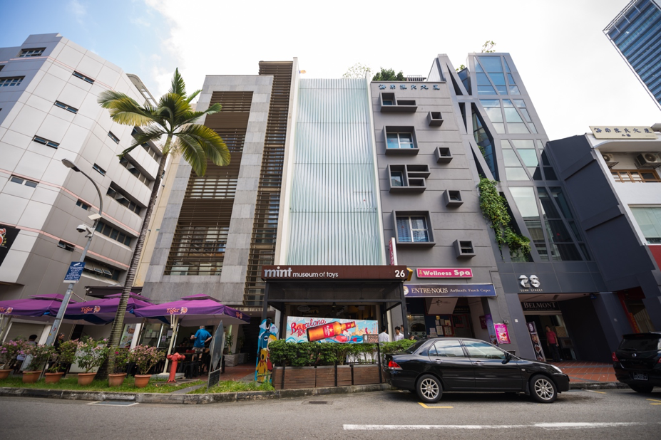
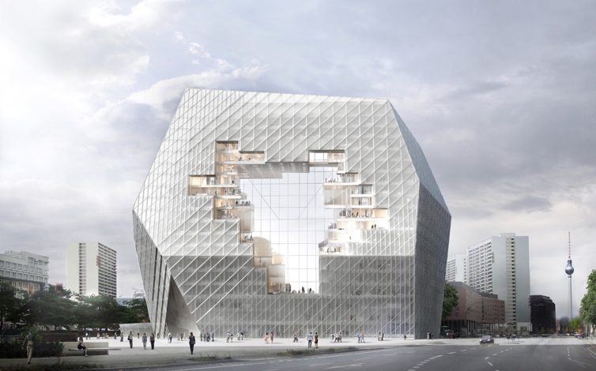

Fig. 1. The Lego House in Billund, Denmark
Ariadne, a character in the movie Inception, constructs dreamscapes, the landscapes in dreams, in which people who perform “inception” enter and plant ideas into someone’s mind. A remarkable scene in the movie is when Ariadne bends half of the horizontal landscape and folds it into the other half, giving the space a ceiling that is identical to its ground. In Inception, we see time and space warped, buildings bent, the line between the unreal and the real blurred; possibilities are endless in the dreams that they go into. Yet the seemingly impossible shapes of a landscape do not only exist in fiction, they also exist in reality, thanks to architects, the Ariadnes of the real world. Many world-renowned architects transform our landscape by delving into the abstract, designing buildings that are seemingly “unbuildable.” For instance, Frank Gehry took the world by storm with the Guggenheim Museum Bilbao, which is not as much a building as a massive sculpture, or Zaha Hadid made her breakthrough with the Vitra Fire Station, whose walls lean away from the usual 90-degree angle. While Frank Gehry and Zaha Hadid change how we think about architecture by bending the shapes of buildings, Bjark Ingels do this by challenging what we think a building is supposed to do. At the heart of all his designs is a concept he calls “bigamy,” “[the pursuit of] the overlap of seemingly opposed regimes or typologies”(Farinelli). In other words, Ingels combines seemingly contradictory types of function or aesthetics in a way that they work harmoniously together. The disparate concepts fit together in his designs like how Lego bricks of different shapes can easily be combined together. Indeed, Ingels’s practice of “bigamy” bears a strong resemblance to the playing of Lego. They are both the practice of combining disparate elements in a way that enables the elements to work in tandem and form something that is better and more meaningful than each element alone. With “bigamy,” Ingels blurs the line between disciplines and transgresses contradiction to create symbiotic structures that combine the best of both, or even more, worlds. In this way, Ingels can add properties to a particular type of building, such as offices, factories, or residences, thus creating new genres of buildings that function differently, look differently, and connect with humans differently. As each new genre of building is a hybrid of multiple types of building, it can establish a more layered relationship between humans and buildings and redefine our ideas of what a building should look like or should do.
Fig. 2. Ingels’s design of the Amager Resource Center, or Copenhill: a hybrid of a green power plant and a ski slope
Ingels’s design of the Copenhill, or the Amager Resource Center, is where his ideology of “bigamy” manifests most radically (see fig. 2). Copenhill is a waste-to-energy power plant that incorporates a ski slope which runs in a zigzag from the top of the building to the ground. The building’s clean production of energy saves it from the usual unwanted-neighbor identity of a traditional power plant that pumps out pollutants. Yet Ingels further elevated the identity of this building and turned it into a place that draws people in by breaking down the wall between production and play. He brought fun into a place where there is expected to be no fun, only mundane machinery. The image of a green power plant has now been enhanced, in that it is not only a source of energy but can also be a source of entertainment.

Fig. 3. Ingels’s design of the Mountain in Copenhagen, Denmark
Furthermore, Ingels has a particular tendency in the way he uses “bigamy.” Ingels implements “bigamy” in a way that the resulting designs provide pleasure to their users. The Mountain is one such design (see fig. 3). Unlike the usual design of an apartment building, where the parking lot is placed underground and the apartments are stacked on top of each other in a vertical block, the Mountain is, apparently, shaped like a mountain. This man-made mountain has its base made up of parking lots and its slope covered with apartments. In this way, each apartment in the Mountain has its own sun-facing garden. High-rise apartments, although having perks such as the view from above, affordability, and ready amenities, lack the outdoor space that garden houses offer. However, as Ingels combined the seemingly exclusive apartment and garden house, the Mountain’s residents do not have to choose; they can live in an apartment and still enjoy the relaxation of a green outdoor space. Ingels’s ideology not only resembles Lego’s in its use of combination, but also in the use of combination to create fun and enjoyment. In 2013, Ingels rose to the challenge of designing the Lego House, the brand house for the universal symbol of fun. As Ingels’s “bigamy” ideology strongly resemble Lego, there is no doubt that the Lego House was one of his most significant projects. Indeed, Ingels himself acknowledged, “If BIG, our company, had been founded with one single purpose, it would be the purpose of building the Lego House” (“LEGO House official video – The making of LEGO House”). This time, Ingels’s practice was put to the test as he had to incorporate fun and play, not into a power plant, or an apartment building, but into a museum of fun and play. As the home of Lego, Billund has certainly had Lego-inspired attractions, such as Legoland, the largest Lego theme park, or the Lego Idea House, a museum that exhibits Lego’s legacy. However, neither of these attractions fully embodies Lego’s ideology: they are fun, but they lack the experience of creating. Legoland is an amusement park full of Lego-inspired rollercoasters (“Legoland, Denmark - All Attractions in 10 Minutes”), yet there are no stations for children to build with Lego bricks. The Lego Idea House is exclusive to Lego employees and VIP guests (“Rare Look Inside LEGO's Private Museum – The LEGO Idea House”) and follows the template of a museum, where visitors are spectators, not participants. The passive experience in Legoland and the Lego Idea House brought about the need for “an experience house” (“LEGO® House – Home of the Brick opens 28 September”), which enables people to fully immerse in the play with Lego bricks. And the Lego House was the solution.
Fig. 4. The Lego House from above
From above, the Lego House resembles a stack of Lego bricks (see fig. 4). Twenty-one interlocking blocks create the shape of a pyramid, broader at the base and getting smaller towards the top. The roof of each block is adorned with one of the colors of Lego bricks: red, green, blue, or yellow. The block at the very top, which serves as the keystone, is the ultimate house sign: a white standard 2x4 brick with 8 studs on top, scaled up hundreds of times. The exterior the building is cladded with white tiles that have the proportions of the 2x4 Lego brick. Thus, from the side, each block looks as if it were made of thousands of smaller bricks. While Ingels could have replicated more complex Lego elements such as the minifigures and trains, he boils things down to the most fundamental element of Lego, the brick. This is indeed Ingels’s way to pay homage to Lego as it is: with the simplest but also versatile bricks, players can create anything, of any scale. The brick-like exterior of the Lego House also provides a perfect introduction to the experience inside: as visitors come closer and closer to the building, Lego-like building blocks turn out to be made of smaller Lego-like bricks, and as they venture deeper inside, they will discover that almost everything, from statues to lunchboxes, is made of Lego, or resembles Lego.
Fig. 5. In the middle is the Mint Museum of Toys in Singapore
While the Lego House goes all out with Lego bricks and colors, many toy museums that are not brand houses look surprisingly normal, even nondescript. The Mint Museum of Toys in Singapore is squeezed between two shophouses and is only 5.5 meters wide (“Mint Museum of Toys”). The only feature that distinguishes it from residences is the façade covered with wavy glass panels (see fig. 5). Without the sign “Mint Museum of Toys,” it is quite hard to expect anything playful inside this building. In fact, the museum’s front even loses in playfulness compared to its right neighbor’s, which is a restaurant. The Strong National Museum of Play in Rochester, New York does a better job than Mint Museum by including a massive colorful sculpture. Nevertheless, the building itself is greyish, dry, and looking not so much a playhouse as an office building. Yet perhaps the reason for the lack of fun in these museums’ architecture does not lie so much in the choice of architects, but rather in branding. What differentiates the Lego House from the Mint Museum of Toys or the Strong National Museum of Play is that the Lego House has an identity to be built upon. Lego has its own style and ideology that is well-known the world over. It is the universal symbol of fun. While toy museums have to define “toys” and physicalize the definition of “toys” in a fun way, Lego does not have to go through this process. All it needs to do is bringing Lego elements into the Lego House, be it bricks, colors, or minifigures, and we automatically associate them with fun. This phenomenon can also appear in other industry, not just toys. Imagine a sports museum and a Nike museum. Nike has reached the status of a legend in sportswear that we do not even need Nike shoes to think of athleticism, we only need the swoosh. Thus, a Nike museum can exude athleticism more easily than a sports museum. Furthermore, brand houses like Lego are not only built to exhibit products, but also to sell more. And in order to sell more, brands have to make the experience in the brand houses as enjoyable as possible. They pay attention to everything, from how the building welcomes visitors to how it bids farewell. Everything is well-designed for branding. The building not only needs to communicate all the amazing things about the brand, but it also has to do this in an enjoyable way. In the case of the Lego House, the playful spirit of Lego starts even before enthusiastic children and grown-ups enter and lay hands on a single brick.

Fig. 6. The Lego House’s pixelated amphitheater
Two building blocks are converted into amphitheaters, in which seats resemble “[a] standard Lego brick, scaled up 18.75 times” (“Inside the Lego House – in pictures”). However, because the seats are created using a pixelated melt that runs from the top of the blocks to the ground, they are turned into stairs that encourage people, not to sit down, but to climb up and roam around (see fig. 6). Thus, these amphitheaters are not so much amphitheaters as playgrounds made out of Lego bricks. In the same manner as the building’s exterior introduces visitors to its interior design, the amphitheaters outside act as a preview of the inviting experience that visitors can expect inside. While Bjarke Ingels is not responsible for the interactive Lego building experience inside the Lego House, he takes charge of drawing the path for visitors through the galleries, and he turns it into a journey full of colors. Visitors start their journey by ascending a white staircase winding around the Tree of Creativity, 15-meter high and made of 6.3 million bricks (“Get access to the full LEGO® House experience!”). At the top of the staircase, they reach the white Masterpiece Gallery, which exhibits Lego creations from fans around the world. Up to this point, the Lego House still resembles a traditional museum, where visitors are spectators, not participants. However, the interactive experience starts as soon as they descend the stairs on the other side and enter the 4 Experience Zones, color-coded with Lego primary colors: Red Zone for creativity, Green Zone for storytelling and role play, Blue Zone for logic, and Yellow Zone for emotions (“Get access to the full LEGO® House experience!”). As visitors make their way through the Experience Zones, they are also traveling through the color spectrum (BIG, “Lego House”) and engage in active and creative play. The walls surrounding the stairs that lead visitors from the Masterpiece Gallery to the Experience Zones start with white, then become more colorful, and then less, until they are cladded with grey and black tiles. This is when visitors reach the History Collection, or the Lego vault, where they can trace the development of Lego since its beginning and every Lego set that has ever been made. In the History Collection, visitors return to their roles as viewers. Bjarke Ingels and Lego’s Experience Designers have collaborated to create a system of activities and wayfinding that turns one’s visit to the Lego House into a complete story with a beginning and end. The white Masterpiece Gallery starts the story on a high note and builds up anticipation by showcasing Lego masterpieces that are every kid’s dream. Then the colorful zones immerse kids in enthusiastic play, hone their Lego building skills. This is where kids lay the first bricks of what might one day become masterpieces. Finally, the journey concludes with the color black and traces back to the start of Lego. Although in the History Collection, the Lego House returns to a traditional museum setting, this low final note prevents the exciting experience from ending too abruptly. The History Collection is probably also Lego’s effort to mitigate adults’ uneasiness in a kid’s paradise, because in here AFOLs, which means Adult Fans of Lego, and parents can temporarily return to their childhood while finding the old Lego sets that they grew up with. If the journey through the Lego House is a story, then visitors are also role-playing in that they have to switch back and forth between the passive role in a conventional museum and the active role in an unconventional museum, and the colors of the stairs are their cues. Iconic attractions of a town or city are usually designed with the consideration for tourists in mind, one-time visitors, but not much for locals, for whom the impact of a building could be permanent. For example, Times Square in New York City is “one of the city’s most famous landmarks and, for residents, perhaps its most despised one” (Owen, "The Psychology of Space"). In fact, New York City has to hire a Norwegian architecture firm, Snøhetta, to integrate Times Square back into New Yorkers’ daily life. However, just as much as it strives to create a fun experience for visitors, the Lego House does take into account how it could enrich the local community in Billund. In fact, it is created partly for the local community in Billund. Tourists flock to Billund mostly to visit Legoland, making the outskirts crowded with services to accommodate visitors, whereas the town center falls behind in development. Therefore, apart from fulfilling the need for an “experience house,” the Lego House is also an effort to “revitalize the town centre” by attracting more people downtown (Wainwright). Granted the site right in the town center, where the old town hall used to be, the Lego House is easily accessible and thus becomes an ideal gathering spot (“LEGO House official video – The making of LEGO House”). Yet Ingels further improves it into a place that is conducive to gatherings.

Fig. 7. OMA’s design of the Axel Springer office building
Fig. 8. Buro-OS’s design of the Axel Springer office building
The interlacing blocks of the Lego House do not fill up all the space inside of the building but create a man-made cave. The style of a hollow building is in fact a trend in architecture when it comes to designing public spaces. In the competition to design a new office building for Axel Springer (in 2013), one of the largest publishing firms in Europe, two of the shortlisted proposals, by OMA and Buro Ole Scheeren, included the design of a hollow building similar to the Lego House’s design (see fig.7 and fig. 8). Axel Springer was in the transition from print to digital media, so both designs emphasized the importance of human interaction in the digital age. At the outer perimeter on each floor are formal offices, whereas the center is hollow and surrounded by restaurants and lounges, providing relaxing areas or an informal working environment. Instead of having separate working floors and relaxing floors, the designs give each floor its own relaxing area that invites employees to leave their confined offices for a freer, more open space. In addition, employees can also benefit from the dynamic atmosphere offered by the aggregate of activities on other floors. The freedom and dynamism at the core of a hollow building thus draw employees out of their room and encourage interaction and communication. The Lego House is fun, it is about Billund proudest invention, and thanks to its hollow structure, it is also a place that promotes interaction between people. The combination of these three elements makes the Lego House a perfect replacement for the old town hall because it is a place where locals can gather to celebrate their own Lego culture. On a small scale, the Lego House fits perfectly like a Lego piece into the site of the old town hall. On a larger scale, it also fits into the town of Billund, but not completely. Great architecture works that have become icons for a town or city always distinguish themselves from other buildings. Only when they are different can they become icons. Located within walking distance from the airport, the Lego House, thanks to the bright colors on its roof, is drastically different from other buildings in town and thus can easily be recognized by passengers en route to Billund. If Dubai has the Burj Khalifa to welcome visitors, Billund now has the Lego House. However, instead of cladding the building’s exterior also with Lego’s bright colors, Ingels uses a subdued white. This shows consideration for the local community in that it saves locals from the annoyance of seeing the garish colors everyday (“LEGO House: Interview with Bjarke Ingels”). Moreover, the ground floor is open to the public free-of-charge. Instead of having to circumvent the building, people can easily cut across it. Consequently, to locals who often travel in town, the Lego House is not a tourist attraction that creates a blockage, but rather one that adds an interesting part to their usual walk. While making the Lego House distinct within the landscape of Billund, Ingels also enables it to blend well into its surroundings and its community’s daily life. This makes the building an outsider and insider at the same time. In fact, all remarkable architectural works should be both outsiders and insiders. They have to stand out enough, but also need a strong tie with their surroundings. In his designs, Bjarke Ingels always tweaks our ideas of what a building is supposed to be, and the Lego House is not an exception. There are certainly existing expectations that in the Lego House, everything is made out of Lego, people will buy Lego and play Lego, everything is explicitly Lego. Yet, architecture-wise, Ingels has played with our expectations. Making something that exudes Lego-ness is not difficult. Ingels could have just placed a giant minifigure and anyone would recognize Lego’s presence. However, he has broadened our ideas of what is supposed to represent Lego. He does not only depend on the iconic Lego brick but also digs deeper into the philosophy and mission of Lego – fun and creative play, and he physicalizes them. And as seen in many of his previous works, embedding fun in architecture is his expertise. Thanks to such compatibility, Bjarke Ingels and the Lego House fit perfectly like two Lego pieces.
This essay was written for the final assignment of the First Year Writing Seminar: Outsider, taught by Deepak Unnikrishnan.